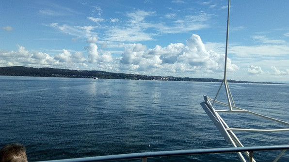
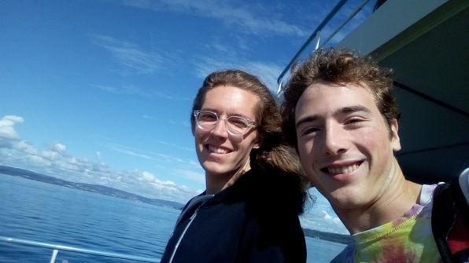
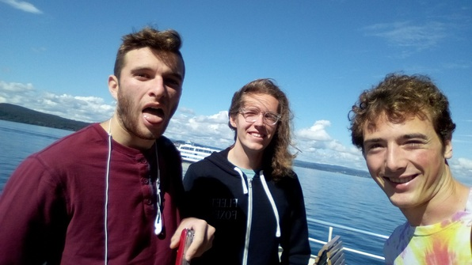
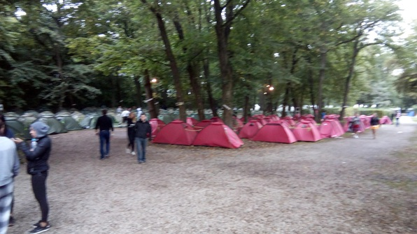
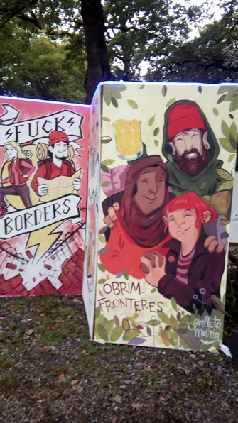

The Trip
Took the FlixBus to München with Daniel and Gideon. It was a convenient and pretty ride, and in the middle of it we crossed an enormous lake, whose regions are the Untersee, Obersee and Bodensee respectively.

 
I read a lot of Cryptonomicon. After 4 hours, we arrived in the München HB and hit up a little Middle Eastern place. I grabbed cash at an ATM, which earned a considerably better exchange rate than Daniel and Gideon did exchanging Franken. Instead of gyros, places in Germany and Switzerland sell doners, which are like gyro sandwiches. For the great great price of 4 Euro, we grabbed our doners, which were delicious. Daniel also ordered a thing that looked like a churro, was shaped like an onion ring, and was dunked in the delicious sugary sauce of gulab jamun. Very tasty!
From there, we took the S-Bahn to Untermenzing, a good 20 minutes out from the city center. We planned to take a bus to our campsite, but we couldn’t figure out how to pay for the bus and then realized that the campsite was only a little ways away. So we hauled to the campsite by foot. The place was absolutely hopping–the company we’d reserved our spot and tent with had gone utterly ham. Festive signs everywhere, murals and branding, so many tents lined up in neat rows.
 
We registered, dropped our stuff in our tents, and headed to the main attraction–the fenced-in area where unlimited beer and sangria were on offer. Here the true ham-ness of the company, Stoke Travel, became apparent. The place was absolutely packed. There was a band partially playing and partially DJing music. There were a couple of platforms where you could stand and see your friends from a distance; one of these was equipped with a “Wheel of Misfortune”. Spinning the wheel obligated you to do one of 8 fairly hardcore embarrassing things, like swapping clothes with a volunteer from the crowd. Lots of people were game, and the others watched like medieval peasants at a hanging (just more festively). I went with Daniel and Gid to the bar and started consuming.
I can’t say how many I had before the tenor of the evening changed, and I stopped self-consciously enjoying the madness and became part of it. The sheer localizing and socializing properties of the ale were astounding–I must have walked up to random groups of people and participated in introductions 10 times, without feeling weird about it.
Time dripped like molasses through a desalination membrane as I bounced around randomly and without much agency, thoroughly enjoying myself through meaningless conversation and perhaps significant glances. Then I had the strangest dream. As dreams do, it hopped hazily from significant scene to significant scene, with important-for-plausibility details missing. Somehow, I ended up on the platform spinning the Wheel of Misfortune, and shenanigans ensued. Later that night, trying to find someone I’d met earlier, I tried to climb a fence into the now-closed bar area. If my memory comes through, I made it in (somehow) but minus a shoe; then stood inside awkwardly until someone kicked me out. I considered trying to get in again, hung out with some more random people, tramped around a lot on sharp gravel without my shoe, then finally returned to the tent to sleep.
When I woke I was with neither my belt nor my right shoe. Felt pretty well rested though. We checked for my shoe by one fence–no luck–so we went in to get breakfast. The breakfast was extremely tasty, hung out with Daniel and Gideon. Finally we were about to leave, and I just happened to be walking by the other side of the fence, so on a hunch I checked it. Bingo! I began to realize that the “dream” had actually occurred.